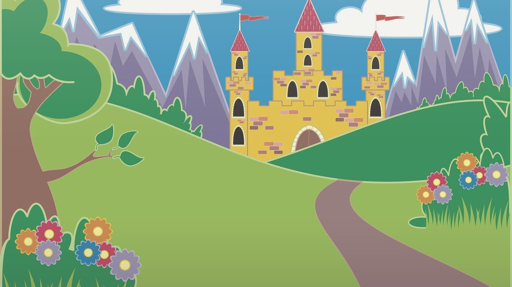
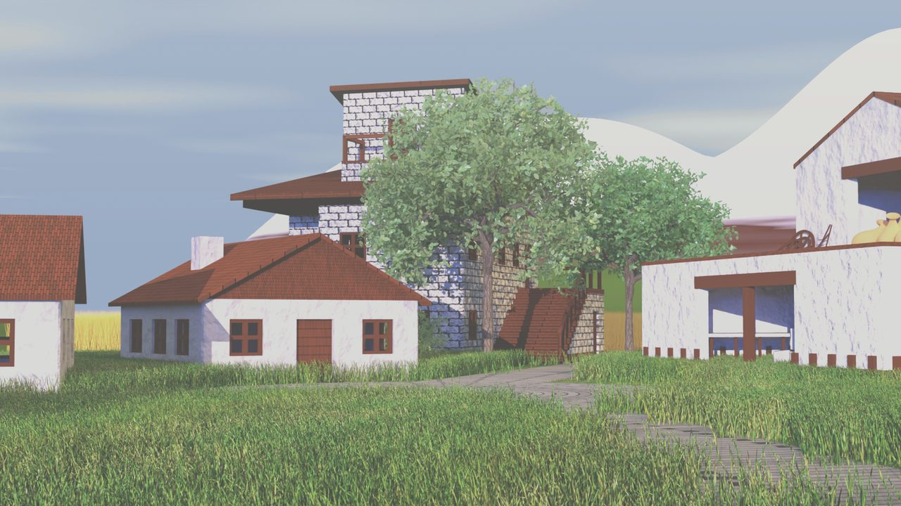

From the opening splash to the Grand Finale ceremony — every screen, every island,
every learning round staged frame by frame, composed with the game’s own art.
A production companion to Docs/STORYBOARD.md.
23
Storyboard Frames
13
Wonder Islands
12
Crystal Shards
261
Stars to Earn
15
Finale Rounds
Lumo and the Crystal of KnowledgeAges 5–12 · 1920×1080 UI · Flat-Toon Storybook2026
01 · Story
Premise & Three-Act Narrative Structure
The crystal shatters · the hero sails · knowledge is restored
High atop the royal citadel of the Wonder Islands, the Crystal of Knowledge kept
numbers, words, music and discovery in harmony. When the mischievous Shadow of Confusion
shattered it into 12 glowing shards and scattered them across the archipelago, numbers
tumbled out of order, letters flew off library pages, and bridges collapsed.
King Arqam, Princess Lexi and Lumo the Owl summon a young adventurer —
Hero A or Hero B — to sail from island to island, solve each island’s
challenges, recover all 12 shards, and reforge the Crystal in the Music Room Finale.
6
Rounds per island
3
Age bands adapted
8
Module types
78
Story rounds total
“Each island ends with a Crystal Shard. Twelve shards forge the Crystal of Knowledge —
and every shard is earned by learning, never by luck.”
P
Prologue — Tutorial 4 steps
King Arqam’s call: tap answers, drag numbers, and learn the 3 Golden Rules of the Wonder Islands.
▼
I
Foundation Islands Levels 1–4
Math Mountain · Word Forest · Memory Garden · Learning Island — counting, sight words, matching, take-away.
▼
II
Craft & Discovery Levels 5–8
Art Studio · Science Lab · Sky Kingdom · Ocean Reef — spelling, potions, number lines, adjectives.
▼
III
Royal Missions Levels 9–12
Puzzle Park · Space Station · Kindness Corner · Dino Valley — grid maps, two-step math, sentences, sorting.
▼
F
Climax — Music Room Finale Level 13
A 15-task gauntlet against the Shadow of Confusion: 3 crystal chimes + 12 mastery tasks — then the Crystal Restoration Ceremony.
LUMO · Visual & Narrative StoryboardPage 2 / 23
02 · Cast
Cast of Characters & Visual Profiles
600×600 sprites · dark storybook ink outlines #281E18
char_lumo.png
Lumo the Owl
Primary Companion & Guide
Golden-brown owl with big expressive eyes. Appears in a golden halo or beside speech bubbles — hints, encouragement, recaps.
char_king.png
King Arqam
Ruler of Number & Logic Realms
Warm bearded monarch in crown and red-gold robe. Hosts the math, logic, navigation and workshop islands.
char_lexi.png
Princess Lexi
Host of Language, Science & Kindness
Cheerful waving princess in royal gown. Guides reading, spelling, potion science, ocean words and kindness.
char_hero_a.png
Hero A (Boy)
Playable Adventurer · Avatar 1
Young explorer in adventurous tunic. The player’s token on the World Map, treasure grid and certificate.
char_hero_b.png
Hero B (Girl)
Playable Adventurer · Avatar 2
Young explorer in adventurous outfit. Same token role — the child picks who sails the Wonder Islands today.
char_shadow.png
Shadow of Confusion
Kid-Friendly Antagonist · Storm Mage
Purple-cloaked storm mage who scattered the 12 shards. Never scary — challenges the hero to prove their knowledge.
char_spark.png
Spark the Dragon
Kingdom Mascot
Friendly storybook dragon, reserved for cutscene moments and promotional illustration.
The Crystal of Knowledge
The Heart of the Story
Shattered into 12 shards, one per island. Reforged at the Finale — 261 stars and 13 mastered skills light the ceremony.
Gold 156pt title over a 26% deep-navy scrim on bg_menu. Lumo bobs gently inside a soft-gold halo — 8px · sin(2.2t).
Motion & Audio
Elements fade in over 0.65s; tap-to-skip always live. Calm Mode: full opacity at once, zero motion. Music: music_menu.wav loop.
Exit
Any tap or 4.5s timer → Main Menu. Lumo stays on-screen in the menu (continuity).
Frame02
Main Menu MainMenuScreen.cs
bg_menu.png · 24% scrimsfx_click.ogg
L U M O
and the Crystal of Knowledge
Lumo · Guide
“Tap Play to sail the Wonder Islands!”
▶ PLAY
How to PlayMy Collection
My ProgressChange Hero
Today’s Adventure
ParentsSettings
Layout
Lumo + speech card left; gold PLAY pill and secondary pills right. Status floats: stars & shard counters.
Overlays from here
How to Play — shards & islands explainer · My Collection — N/261 stars, N/12 shards, badges, words · Parents — 4-digit PIN gate → tips, timers, CSV · Settings — music / SFX / voice toggles.
Routing
PLAY → Character Select (first run) → Tutorial, or straight to World Map once the tutorial is done.
LUMO · Visual & Narrative StoryboardPage 5 / 23
04 · Core UI
Choose a Hero & Meet the Kingdom
Frames 03–04 · Character Select & Tutorial Step 1
Frame03
Character Selection CharacterSelectScreen.cs
bg_kingdom.png · 26% scrim

Who will you be today?
← Back
SELECTED
Hero A
Choose me!
Hero B
Choose me!
Action
“Choose me!” saves avatar 1 / 2, plays a 0.20s celebratory card bounce and a toast — “You chose Hero A/B!”
Routing
First run → Tutorial. After the tutorial → straight to the World Map. Back pill returns to Main Menu.
Frame04
Prologue — Step 1 of 4 TutorialScreen.cs · “Welcome to the Kingdom!”
bg_village.pngvo_story_intro

STEP 1 OF 4 · ●○○○ [ Skip ]
Welcome to the Kingdom!
“Our magic crystal broke into twelve pieces. Help us! Play the games, get the stars, and save our kingdom!”
▶ Let’s Start!
Lumo: “Hello!”
Staging
Left: King Arqam (260×310) · Center: parchment story card (1080×440) · Right: the Shadow with a floating shard. Progress ribbon: 4 pips + “Step X of 4”.
Voice-Over
vo_story_intro — the king’s call to adventure. Guide bar: Lumo (220×220) beside a 1260×84 parchment pill at bottom.
LUMO · Visual & Narrative StoryboardPage 6 / 23
04 · Core UI
Tutorial Interaction Drills
Frames 05–06 · Tap the answer · Tap or drag
Frame05
Step 2 of 4 — Tap the Answer TutorialScreen.cs
bg_village.pngsfx_correct
STEP 2 OF 4 · ●●○○ [ Skip ]
2 apples + 3 apples = ?
+
456
Lumo: “Count the apples with me — tap the right number!”
Interaction
Tap 4 or 6 → gentle retry toast, no penalty. Tap 5 → sfx_correct and advance to Step 3.
Pedagogy
First drill teaches the core verb of the whole game: tap the answer. Visual apples mirror the prompt so counting stays concrete.
Frame06
Step 3 of 4 — Tap or Drag TutorialScreen.cs
bg_village.pngui_slot.png · sfx_collect
STEP 3 OF 4 · ●●●○ [ Skip ]
2 apples + 3 apples = ?
5
⟵ drag / tap
5
✓ Slot filled — number pops!
Lumo: “Tap or drag the number 5 into the highlighted box!”
Interaction
Drop or tap 5: the slot turns green, sfx_collect plays and the number scales with a pop before advancing.
Pedagogy
Introduces drag-and-drop — the second core verb — used later by spelling tiles, sentence words and workshop sorting.
Step 4 of 4 — Explore at Your Own Pace TutorialScreen.cs
bg_village.png
STEP 4 OF 4 · ●●●●
THE 3 GOLDEN RULES OF WONDER ISLANDS
1. Sail freely & earn stars 2. Tap Hint anytime for Lumo’s help 3. Mistakes are part of learning — try again!
I’m ready!
Lumo: “You are ready for the islands!”
Action
“I’m ready!” sets tutorialDone = true and opens the World Map. The Skip pill has been available at every step.
Design intent
The Golden Rules set expectations for Free Sail (non-linear choice), the always-available Hint button, and a growth-mindset retry loop.
Frame08
Wonder Islands World Map WorldMapScreen.cs
bg_kingdom.png · 22% scrimSailAndOpen · 0.38s
⌂ HomeFree Sail
WONDER ISLANDS
★ 132/261 · ◆ 5/12
1
Math Mountain
2
Word Forest
3
Memory Garden
4
Learning Isl.
5
Art Studio
6
Science Lab
7
Sky Kingdom
8
Ocean Reef
9
Puzzle Park
10
Space Station
11
Kindness Cnr.
12
Dino Valley
13
Music Room
Hero · ▷Tap any island to sail there!
Parents⚙
HUD
Left: Home + Free Sail / Linear toggle · Center: title · Right:Stars X/261 · Shards Y/12 · Ages 8–10.
Action
Tapping an unlocked island sails the hero token along the path (SailAndOpen, 0.38s) into the Level Intro. Locked medallions show the lock glyph; island 13 glows gold.
LUMO · Visual & Narrative StoryboardPage 8 / 23
Frame09
Island 1 · Math MountainThe Fruit Village — chapter intro & 6 rounds
The Shadow of Confusion + Lumothe Shadow is the final examiner — never punitive
Intended Learning Outcomes
Apply — “I can use all my number powers!”
Produce — “I can build words, sentences and find the way!”
Perform — “I can listen and play the tune back!”
Gauntlet Design
Three xylophone echoes open the duel; the Shadow then re-casts one challenge from every island skill — a full-curriculum victory lap ending at the crystal gate.
Level Result & Child Reflection LevelResultScreen.cs
sfx_complete · sfx_collectConfettiEffect
Math Mountain Complete!
Stars earned: 18 (level best 18/18) · XP +90 (total 640) Perfect! No hints used: +10 bonus XP You earned a Crystal Shard! ◆
What did you like most?
So fun!Tricky but I did it!▶ Continue↻ Play Again
Pedagogical Note (LXD D3)
The reflection prompt records the child’s affective response into SaveData for the Parents Area, and auto-hides gracefully after 8s if ignored.
FX
sfx_complete + sfx_collect with a confetti burst across the top; shard art spotlights the earned reward.
Frame23
Grand Finale Victory & Certificate FinalResultScreen.cs
bg_final.png · 42% scrimmusic_victory.wav
You Saved the Kingdom!
Grand Master Trophy — earned! · Crystal of Knowledge Badge — earned! Certificate of Achievement — Hero A! · Final score 970 XP · Stars 261/261
Skills good/mastered: 13/13 · Badges: Math Master, Word Explorer…
View My ProgressMain Menu
Ceremony
music_victory.wav fanfare; King and Lexi flank the certificate while Lumo looks on — the full court celebrates the restored Crystal.
Exit
View My Progress → Progress Report; Main Menu closes the loop back to Frame 02. Replay invites a new hero or harder age band.